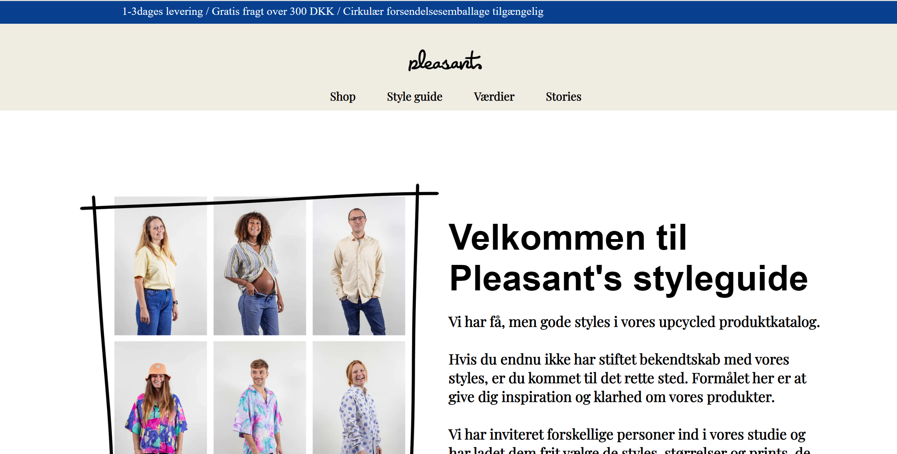
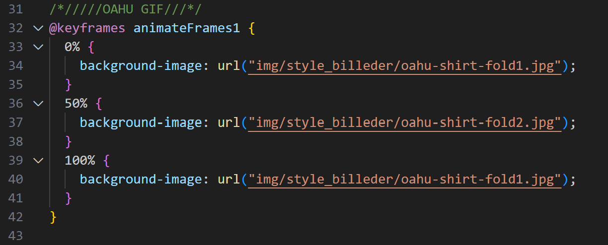
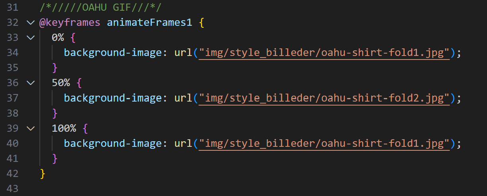

Pleasant Redesign
This theme was a challenge at first, specifically getting used to working together in a group, rather
than individualy. With so many people working on one project there would sometimes come issues with our
shared css file, if we didn't inform others of any changes we made there, problems would arrise with the
overall look of our shared elements
My responsibility was the Style guide page on Pleasants website. Though there wasn't enough content to make a big change in design or layout I chose to challenge myself and make a sort of carousel animation, to add some more movement into the page.
We got started almost immediately in the search of a company/shop that we could work with, however something that we did struggle with when it came to time management was the preplanning aspects, we put so much focus onto doing every small task, that we seemed to have less time than expected for the actual redesign.
My responsibility was the Style guide page on Pleasants website. Though there wasn't enough content to make a big change in design or layout I chose to challenge myself and make a sort of carousel animation, to add some more movement into the page.
We got started almost immediately in the search of a company/shop that we could work with, however something that we did struggle with when it came to time management was the preplanning aspects, we put so much focus onto doing every small task, that we seemed to have less time than expected for the actual redesign.


